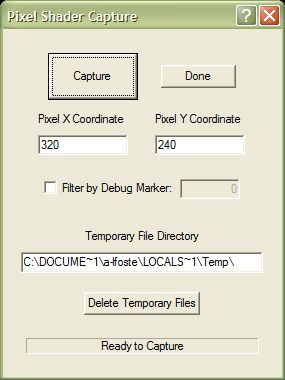
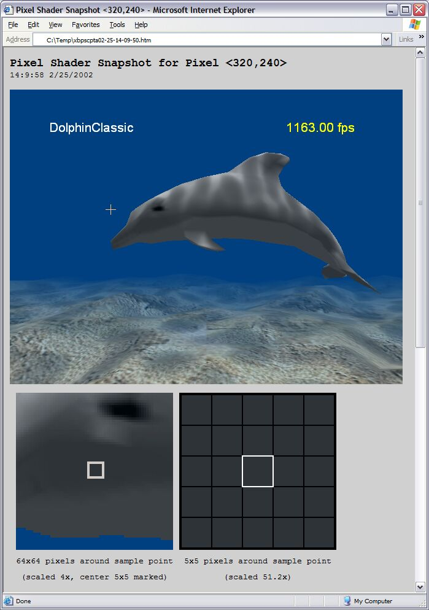
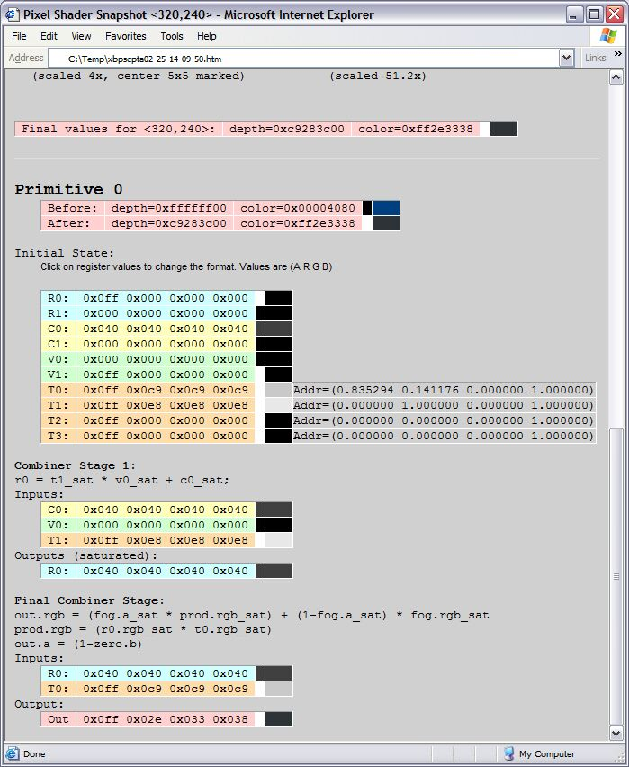

The Pixel Shader Debugger captures a frame from a title running on the Xbox development kit, and then generates a report of pixel shader information in that frame. This information is useful for debugging the code that makes up a pixel shader.
USAGE: xbpscapture
When first started, the Pixel Shader Debugger presents you with a dialog box, which looks similar to the following image:

You can control which pixel the tool captures by altering the values in the Pixel X Coordinate and Pixel Y Coordinate text boxes. The tool will generate a report containing information about the specific pixel you specify.
The Filter by Debug Marker option tells the Pixel Shader Debugger to only draw geometry that has been marked by the SetDebugMarker function. Only objects drawn with the indicated debug marker will appear in the report generated by xbpscapture.
The Pixel Shader Debugger produces a number of temporary files when it generates its report. You can control where the tool writes these temporary files by changing the path listed in the Temporary File Directory text box. To remove files generated by the tool from this directory, click Delete Temporary Files.
You should already have the title you wish to debug running on your Xbox development kit. Once you have altered the tool's settings to your preferences, do the following:
The Pixel Shader Debugger takes a snapshot of the scene displayed by the Xbox development kit, and then opens Internet Explorer and displays its report.
The Pixel Shader Debugger produces its report in the form of an HTML page, which looks similar to the following image:

The top portion of the report displays the entire screen, as captured from the Xbox development kit when the Capture button was pressed. Below the screen capture are two smaller images that display zoomed-in views surrounding the captured pixel.
If you pass the mouse cursor over the large image, the cursor changes to a "plus" shape (see the above image, just above the dolphin's snout). Clicking on the image re-launches the Pixel Shader Debugger, using the coordinates where you clicked to generate a new report. This feature allows you to walk across a static image, examining pixel shader transformations on pixels other than the one you originally selected in the tool's interface.
Note The new report generated by the Pixel Shader Debugger (when you click on the screen capture image) represents whatever is currently displayed by the Xbox development kit, not what was displayed when the tool generated the report you are currently clicking. In other words, every time you click on the image, the Pixel Shader Debugger takes a new "live" snapshot of whatever is on the Xbox display at the time. If the title running on the Xbox development kit is continuously updating the display with newly rendered frames, clicking a pixel is likely to generate unpredictable results.
The bottom part of the report displays information about the actual color and depth transformations performed on the selected pixel by shaders. Assuming that the pixel you chose was actually processed by a pixel shader, the bottom part of the report will resemble the following image:

Within the bottom part of the report are color values for the selected pixel at various points during its transformation. Color values are listed in ARGB (Alpha, Red, Green, Blue) order, alongside a small color swatch showing the color that these numeric values represent. You can click the ARGB value to cycle its display format among different styles, as shown in the following table:
| Format | Example |
|---|---|
| Separated hexadecimal | 0x0ff 0x02e 0x033 0x038 |
| Combined hexadecimal | 0xff2e3338 |
| Fractional decimal | 1.0000001 0.1803922 0.2000000 0.2196079 |
| Integral decimal | 255 46 51 56 |
If you select a pixel that is not affected by any primitives, the bottom portion of the report will be replaced with the message: "No Primitives affected this pixel." For example, this message would result for the pixel location indicated by the cursor above the dolphin's snout in the sample image above (because there are no primitives located at that point, only the blue background box).
If you select a pixel that is affected by a primitive, but does not have a pixel shader applied to it, the bottom portion of the report will display the message: "No pixel shader was active for this primitive." For example, clicking the "DolphinClassic" text in the sample above would result in this message.
The Pixel Shader Debugger does not currently recognize geometry drawn using Begin/End or vertices inserted directly into the pushbuffer. It only recognizes vertices drawn using one of the following methods: DrawVertices, DrawIndexedVertices, DrawPrimitive, DrawIndexedPrimitive, DrawVerticesUP, DrawIndexedVerticesUP, DrawPrimitiveUP, and DrawIndexedPrimitiveUP.